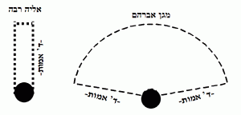
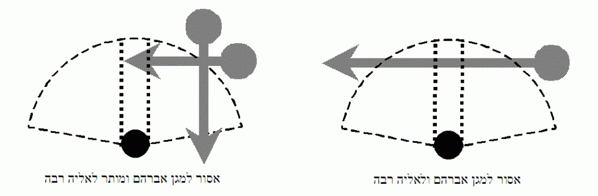
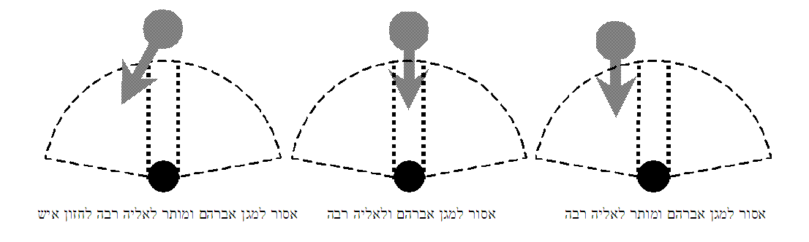

א׳. מתי מותר להפסיק בתפילת עמידה
אדם העומד בתפילה לפני בוראו, צריך להיזהר מאוד שלא להפסיק בדיבור, ואפילו להפסיק בהליכה או ברמיזה אסור. ושונה דין תפילת עמידה מדין פסוקי דזמרה וברכות קריאת שמע, שבאמצע פסוקי דזמרה וברכות קריאת שמע, מותר ללכת ומותר לרמוז, ולצורך גדול מותר אף לדבר, וכפי שהתירו לומר שלום לאדם שעלול להיפגע אם לא יאמרו לו שלום (כמבואר להלן טז, יד, ובפניני הלכה תפילה יד, ד; טז, ה-ו). אבל באמצע תפילת עמידה, אסור להפסיק, ורק לצורך פיקוח נפש או לצורך התפילה עצמה התירו להפסיק. וקל וחומר הוא, שאם לפני מלך בשר ודם עומדים ברעדה ונזהרים שלא להפסיק בדברים אחרים, על אחת כמה וכמה שהעומד בתפילה לפני מלך מלכי המלכים צריך להיזהר שלא להפסיק באמצע תפילתו בדברים אחרים.
אפילו מלך ישראל שואל בשלומה באמצע תפילתה – לא תשיבנו. אמנם אם מלך גוי שעלול להורגה פונה אליה באמצע תפילתה – תפסיק, שפיקוח נפש דוחה תפילה (ברכות ל, ב).
ואם נחש שאינו ארסי כרוך על עקבה – לא תפסיק בתפילתה לקרוא לעזרה, אבל אם עקרב או נחש ארסי מסכנים אותה – יכולה לקרוא לעזרה, שפיקוח נפש דוחה תפילה (ברכות לג, א; שו"ע או"ח קד, א-ד).
הליכה אינה נחשבת להפסקה גדולה, ולכן במקרה שהתחילה להתפלל במקום שקשה לה לכוון, יכולה ללכת למקום אחר. למשל, אם נחש שאינו ארסי מתקרב אליה, והדבר טורד את כוונתה, אף שאין בכך פיקוח נפש, רשאית ללכת למקום אחר כדי להמשיך להתפלל שם בכוונה (משנה ברורה קד, י).
העומדת בתפילתה ושמעה קדיש או קדושה, אסור לה לענות. אבל יכולה לשתוק ולכוון למה שהשליח ציבור אומר, ויחשב לה כמי שענתה, שדין שומע כעונה. וכן המנהג. ואם ההפסקה בתפילתה מפריעה לכוונתה, רשאית להמשיך להתפלל (פניני הלכה תפילה יז, 11).
ואם באמצע התפילה נסתפקה באיזה דין שאולי מעכב את התפילה, כגון ששכחה לומר דבר מה ואינה יודעת מה עליה לעשות, תלך לעיין בספר כדי לדעת כיצד לנהוג. ואם אינה יודעת לעיין בספר, יש אומרים שרשאית אף להפסיק בדיבור כדי לברר את ההלכה, ובשעת הדחק אפשר לסמוך עליהם (משנה ברורה קד, ב).1
הֶעָרוֹת (1)
- כפי שנתבאר לעיל יג, ב, אם ההפסקה ארכה כשיעור שהיא רגילה לומר את כל התפילה מתחילתה ועד סופה, למנהג ספרדים, עליה לחזור לתחילת התפילה, ולמנהג אשכנזים, אם ההפסקה היתה מחמת אונס, כגון שהיתה במקום צואה או מפני סכנה, עליה לחזור. ואם הפסיקה ברצונה, חוזרת למקום שהפסיקה.
ב׳. הפסקה לצורך כוונה
אשה שעמדה להתפלל, ונעמדו בקרבתה אנשים או ילדים שמדברים עד שאינה יכולה לכוון, אם תוכל לרמוז להם והם ישתקו, מוטב שתרמוז, שהרמיזה נחשבת להפסקה קלה מהליכה. אבל אם לא ישמעו לה, תלך למקום אחר ותמשיך להתפלל (משנה ברורה קד, א).
וכן מי שבאה להתפלל בעזרת נשים, והילד שלה החל להפריע באמצע התפילה, עד שהיא או מתפללים אחרים אינם יכולים לכוון כראוי, תרמוז לו שיצא, ואם אינו מבין, תוציאו מבית הכנסת בלא לדבר, ותמשיך להתפלל בחוץ.
ואם בתוך תפילתה אירעה בביתה תקלה, שאם לא יתקנוה מיד יגרם הפסד, לא תפסיק (משנה ברורה קד, ב; כה"ח ו). אבל אם הדבר מטריד אותה כל כך עד שאיננה יכולה לכוון, רשאית ללכת לתקן את התקלה.
אם נפל סידור לארץ, ואינה יכולה לכוון כל זמן שאין מרימים אותו, תסיים את הברכה שנמצאת בה, ותלך להרימו. ואם התחילה להתפלל בעל פה והתבלבלה ואינה יכולה להמשיך, תלך לקחת סידור ותמשיך בתפילתה (משנה ברורה צו, ז).
אם באמצע תפילתה מצלצלים בטלפון, תמשיך בתפילתה. ואם אינה יכולה להמשיך לכוון, רשאית ללכת לנתק את הטלפון ולחזור לתפילתה.
וכן כאשר דופקים על הדלת, אם היא יכולה להתגבר על עצמה ולהמשיך להתפלל, תמשיך להתפלל. ואם אינה יכולה להתגבר על עצמה, והיא חוששת שאם לא תפתח את הדלת – זו שדופקת תלך, ואולי היא דופקת לצורך דבר דחוף, והדבר טורד מאוד את דעתה עד שאינה יכולה לכוון כראוי, רשאית לפתוח את הדלת ולרמוז שאינה יכולה כעת לענות, ותיזהר מאוד שלא להפסיק בדיבור (תפילה כהלכתה יב, פו).
ג׳. אין לשבת בתוך ד אמות של המתפלל
לרוב חשיבותה וקדושתה של תפילת עמידה, אסרו חכמים לשבת בתוך ארבע אמות של המתפלל, מפני שהעומד בתפילה עומד לפני השכינה, וכל המתיישב שם בבטלה נראה כמי שאינו מקבל עליו עול מלכות שמים, ומבזה את מקום התפילה.
שיעור ארבע אמות הוא כשני מטרים. ליתר דיוק: אמה היא כשיעור זרועו של אדם ממוצע, ולדעת רוב הפוסקים היא כ- 48 סנטימטר, הרי שארבע אמות הן כ- 192 סנטימטר. אמנם ברור שאין צורך למדוד את המרחק מהמתפלל בסנטימטרים, אלא צריך כל אדם לנהוג כפי מה שישער בעיניו, ואם נראה שיש בינו לבין המתפלל כשני מטר, רשאי לשבת.
לאדם שעוסק בתפילה או תורה, מותר להתיישב ליד המתפלל עמידה, שהואיל והוא עוסק בתפילה או תורה, אינו פוגע בכבוד שמים (ע' פ"ה תפילה יז, יז).
אדם שישב ובא חבירו והתחיל להתפלל עמידה לידו, אע"פ שהוא אינו מתפלל או לומד, רשאי להמשיך לשבת. מפני שאין בזה ביזוי לתפילה, אלא המתפלל הוא שעשה שלא כדין, שהתחיל להתפלל בתוך ארבע אמותיו. ואע"פ כן, מידת חסידות שיקום, כדי לתת כבוד לתפילה (רמ"א שו"ע או"ח קב, ג).
לאדם חלש, מותר להתיישב בתוך ארבע אמותיו של המתפלל, אפילו כשאינו עוסק בתפילה, שהכל יודעים שמפני חולשתו נצרך להתיישב, ואין בכך פגיעה בכבוד שמים (שו"ע או"ח קב, ב). וביום הכיפורים, כמעט כולם נחשבים לחלשים מפני הצום, ומותר להתיישב בתוך ארבע אמות של המתפלל (בית ברוך כו, ט).
יש מי שמחמיר וסובר שממש מול פני המתפלל אסור לישב, ואפילו מחוץ לארבע אמותיו, מפני שהמתפלל נראה כמשתחווה לו. ולכן, אפילו אם הוא קורא קריאת שמע, וישב שם לפני שחבירו התחיל להתפלל עמידה, עליו לעמוד. ולכתחילה, טוב לחוש לדעה זו (שו"ע או"ח קב, א; משנה ברורה קב, ט; כה"ח י).
ד׳. אסור לעבור כנגד המתפללים
אסור לעבור לפני המתפלל בתוך ארבע אמותיו, מפני שהעובר לפניו עלול להפריע לו לכוון בתפילתו. ויש אומרים, שטעם האיסור, מפני שהמתפלל עומד לפני השכינה, והעובר לפניו פוגע בכבוד השכינה (פניני הלכה תפילה יז, 16).
נחלקו הפוסקים בשאלה, היכן בדיוק אסור לעבור, לדעת ה'אליה-רבה', האיסור הוא רק ממש מול פניו של המתפלל, שרק מי שעובר שם מפריע לו בתפילתו. כלומר, רוחבו של אדם בערך חצי מטר, לפיכך אין לעבור באותו חצי מטר שמול פניו עד למרחק של ארבע אמות (כשני מטר). ואילו לדעת ה'מגן-אברהם', בכל מקום שהמתפלל יכול לראות בתוך ארבע אמותיו – אסור לעבור, מפני שהעובר שם עלול להסיח מעט את דעתו של המתפלל.

עוד נחלקו, שלדעת ה'אליה-רבה' מותר לאדם לבוא ולעמוד לפני המתפלל בתוך ארבע אמותיו ולהישאר לעמוד שם. שרק אם הוא חוצה את ארבע האמות שמול פניו, הוא מפריע לו בתפילתו, אבל אם הוא בא מהצד ונשאר לעמוד לפניו, אינו מפריע כל כך. ולדעת ה'מגן-אברהם', אסור לאדם להיכנס לתוך ארבע האמות שלפני המתפלל.

לכתחילה, יש להחמיר כדברי ה'מגן-אברהם', ובשעת הצורך, אפשר להקל כדברי ה'אליה-רבה' ולעבור לצידו של המתפלל, וכן לעבור ולעמוד ממול פניו. לפיכך, מי שאיחרה לתפילה, רשאית לעבור בצידי אחת המתפללות כדי להגיע למקומה, אולם אם היא צריכה לעבור לשם כך בצידי כמה מתפללות, לא תעבור, מפני שקרוב לוודאי שתסיח את דעתה של אחת מהן (פ"ה תפילה יז, 17).
ולצורך גדול מאוד, כשאין ברירה אחרת, מותר אף לעבור ממש לפני המתפללת. למשל, מותר למי שצריכה ללמד שיעור לעבור לפני המתפללת. וכן מותר למי שממהרת מאוד, כגון שחוששת להפסיד את ההסעה שלה, לעבור לפני המתפללת.
אם עמד אדם בתפילה במקום המעבר, כיוון שנהג שלא כדין בזה שעמד במקום שמפריע למעבר הנכנסים והיוצאים, אין חובה להתחשב בו, ומותר בשעת הצורך לעבור כנגד פניו (שם 18).
ה׳. המסיים תפילתו
המסיים תפילת שמונה עשרה והיה אדם עומד אחריו בתפילה, אם הוא רחוק ממנו ארבע אמות ועוד שיעור שלוש פסיעות, כך שאם יפסע שלוש פסיעות לאחריו לא יכנס לתוך ארבע אמותיו – יפסע לאחריו. ואם הוא קרוב יותר, לא יפסע לאחריו עד שהמתפלל אחריו יסיים את תפילתו. ואפילו אם זה שעומד אחריו התחיל להתפלל מאוחר והוא מאריך בתפילתו, אסור לו להיכנס בפסיעותיו לתוך ארבע אמותיו. אלא שכפי שלמדנו, נחלקו האחרונים בגדר האיסור:

כלומר, לדעת ה'מגן-אברהם', גם אם המתפלל אינו עומד ממש אחריו, כל זמן שבפסיעותיו הוא פוסע בתוך הרדיוס של ארבע האמות שלפניו, עליו להמתין עד שזה שאחריו יסיים את תפילתו. ולדעת ה'אליה-רבה', רק אם הוא עומד ממש לפניו אסור לו לפסוע לאחריו כנגד המתפלל, אבל אם זה שמתפלל אחריו אינו ממש כנגדו, מותר לו לפסוע שלוש פסיעות לאחריו. לכתחילה, טוב לנהוג כ'מגן-אברהם', ובשעת הצורך, אפשר להקל כדעת ה'אליה-רבה' (משנה ברורה קב, יח-יט). ואף במקרה שהמתפלל ממש מאחריו, בשעת הדחק יוכל לפסוע לאחריו באלכסון, שיש מבארים שלדעת ה'אליה-רבה', כל זמן שאינו מתקרב בפסיעותיו אל המתפלל – מותר (בשם החזו"א).2
ואם עומד בינו למתפלל מי שכבר סיים את תפילתו, רשאי לפסוע לאחריו, מכיוון שזה שסיים את תפילתו מהווה חציצה בינו למתפלל, למרות שזה שחוצץ עדיין לא פסע שלוש פסיעות.
בשעת הצורך, אפשר להקל גם כאשר יש בין המתפלל לבינו מחיצה שגובהה לפחות עשרה טפחים (80 ס"מ), ורוחבה לפחות ארבעה טפחים (32 ס"מ). לפי זה, הרוצים להקל, רשאים להחשיב את הספסלים הגדולים והקבועים שבבתי הכנסת כמחיצה, הואיל וגובהם עשרה טפחים (פ"ה תפילה יז, 19).3
הֶעָרוֹת (2)
- דברי החזו"א הובאו בספר ד' אמות של תפילה עמודים נ', שסג, וע' באש"י כט, ז, ושם לב, הערה עג. מי שאינו יכול לפסוע מפני המתפלל שאחריו, למרות שעדיין לא נפרד מהתפילה, רשאי לענות אמן ו"ברוך הוא וברוך שמו", ולומר את כל התפילות. ואם הגיעו לתחנון, רשאי להתיישב לאומרו, ובתנאי שלא ישב ממש מול פניו. ואח"כ יעמוד שוב במקומו, וכשהמתפלל אחריו יסיים את תפילתו, יפסע שלוש פסיעות לאחריו ויאמר "עושה שלום" (משנה ברורה קכב, ד; וע' קד, ט).
- כתב במ"ב קב, ב, שמחיצה בגובה של י' טפחים (80 ס"מ) אינה מועילה כדי לעבור כנגד המתפלל, שהואיל והמתפלל יכול לראותו, המעבר טורד את כוונתו. ע"כ. ובשעת הדחק אפשר לסמוך על הח"א ואשל אברהם (בוטשאטש), שסוברים שעל ידי מחיצה מותר גם לעבור כנגד המתפלל. ולעניין ישיבה בתוך ד"א של המתפלל, כתב במ"ב קב, ב, שמחיצה של י' טפחים מועילה. אמנם נלענ"ד שראוי להחמיר שלא לשבת ממש מול המתפלל מלפניו, כדי שלא יראה כמשתחווה לו. להרחבה ע' בפניני הלכה תפילה יז, 15.
ו׳. עוד פרטי דינים
כפי שלמדנו, לכתחילה ראוי להחמיר כדעת ה'מגן-אברהם', שלא לפסוע שלוש פסיעות בתוך ארבע אמות שלפני המתפלל, ואפילו אם אין המתפלל אחריו ממש מולו.
אבל לפעמים תפילתו של המאריך ניטרדת, מפני שאינו רוצה לעכב את המתפלל לפניו מלפסוע שלוש פסיעות בסיום תפילתו; וכאשר הממתין חש בזה, מוטב שינהג כדעת ה'אליה-רבה', שאם אינו ממש כנגדו, יפסע לאחריו שלוש פסיעות.
וכן רשאי מי שרגיל להאריך בתפילתו לבקש מהמתפללים לפניו, שלא ימתינו לו עד שיסיים. ואזי יהיה מותר להם לפסוע לאחריהם מיד כשיסיימו את תפילתם. ומי שמתפלל ממש לפניו, יפסע באלכסון, כדי שלא לפסוע ממש כנגדו (פ"ה תפילה יז, 20).
ככלל, ראוי לאדם שיודע כי הוא מאריך בתפילה, שלא יתפלל אחרי חבירו, כדי שלא לעכבו ולגרום לו צער.
נחלקו האחרונים, האם דין קטן שמתפלל כדין גדול שאסור לפסוע לפניו ולשבת בתוך ארבע אמותיו (עיין בספר ד' אמות של תפילה ע' רנד-רנז). וכיוון שדין זה מדברי חכמים, הלכה כדברי המקילים, והמהדרים מחמירים.
הַטֶּקְסְט: פְּנִינֵי הֲלָכָה, הָרַב אֱלִיעֶזֶר מֶלָמֵד, יְשִׁיבַת הַר בְּרָכָה – ph.yhb.org.il · דֶּרֶךְ סְפָרִיָּא, בְּרִשָּׁיוֹן CC BY-NC
הַמַּאֲגָר הַמָּלֵא: kol-toda.co.il